An open floor plan is great until every zone starts bleeding into the next one.
A partition solves that without putting up a real wall, and these 10 designs cover the range, from barely-there to architectural.

1. Laser-Cut Panels
A laser-cut panel brings genuine artistry to a partition, turning what could be a purely functional element into the room's actual focal point.
The cutout pattern also lets light filter through in a way a solid panel simply can't.
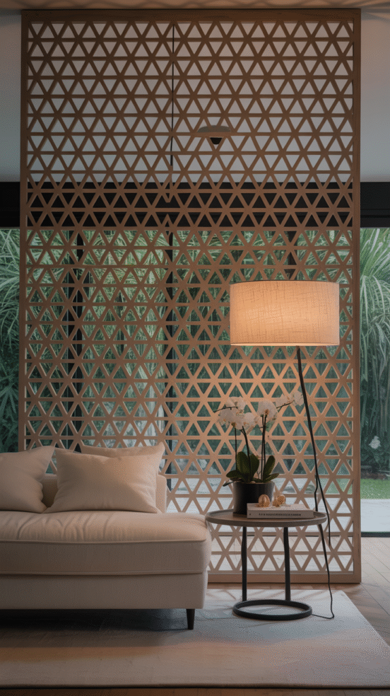
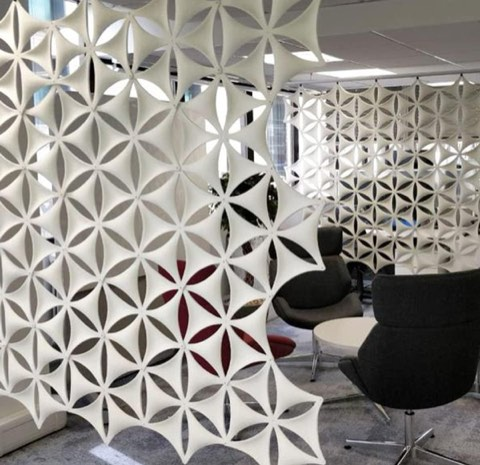
White 3D Flower Hanging Room Divider Panels, 14 x 12 Inch, Laser-Cut Style
Shop on Amazon2. Half Walls
A half wall divides a room while still keeping sightlines and light moving between both sides, genuinely the best of both a full wall and no wall at all.
It also creates a natural surface for a shared console table or a run of seating that serves both zones at once.
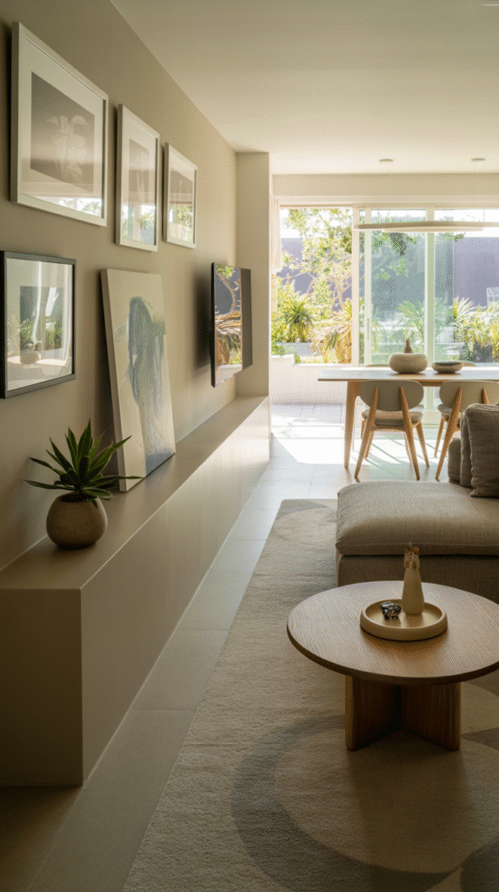
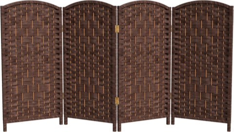
Red Lantern 3 Ft Short Diamond Weave Folding Screen, 4 Panel, Dark Mocha
Shop on Amazon3. Built-In Cabinets
A built-in cabinet used as a divider turns the partition itself into genuine architecture, not just a line between two zones.
This is the most permanent and most involved option on this list, best suited to a true renovation rather than a weekend project.
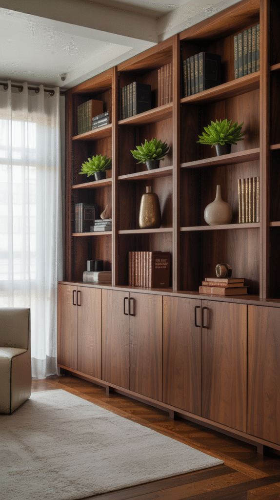
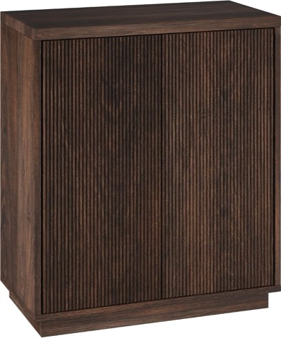
Henn and Hart 28 Inch Fluted Accent Cabinet, Sideboard Buffet, Rich Brown
Shop on Amazon4. Folding Screens
A folding screen brings genuine personality and pattern to a space, while staying completely portable and easy to reposition.
This is a classic divider style that's aged well precisely because it never demanded any real commitment to begin with.
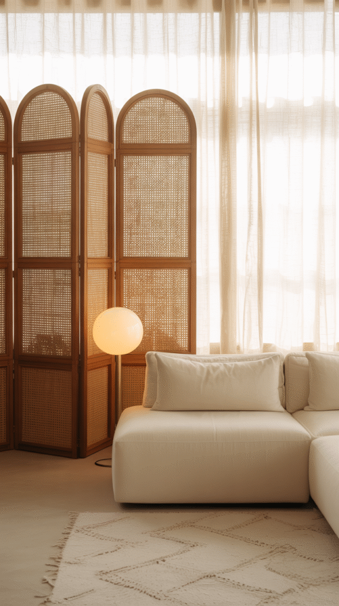
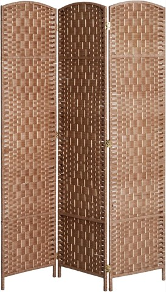
HOMCOM 3-Panel Room Divider, 6 Ft Tall Folding Privacy Screen, Natural Woven
Shop on Amazon5. Curtains and Drapes
A curtain is the lowest-commitment partition on this entire list, both in cost and in how easily it can be changed or removed later.
It still delivers real visual and acoustic separation, just without any of the permanence of a hard divider.
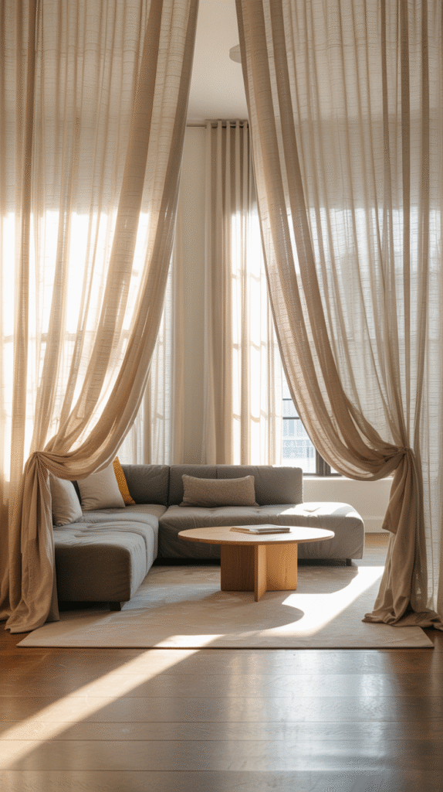
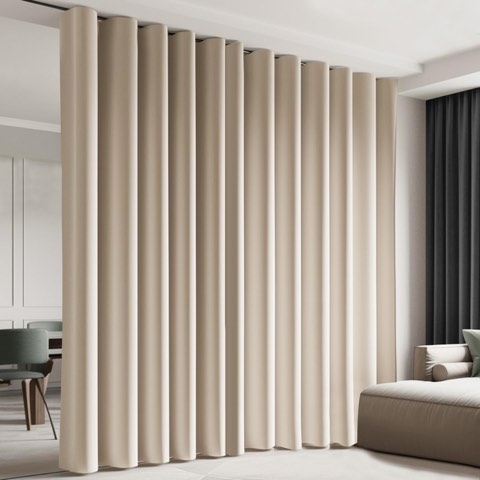
Room Divider Blackout Curtain with Ceiling Track, Cream, for Living Rooms
Shop on Amazon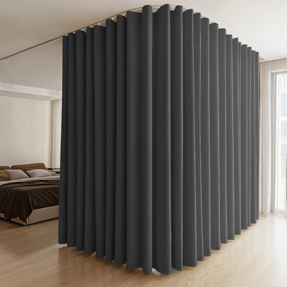
MaKefeile Room Divider Curtains with Flexible Bendable Ceiling Track Set
Shop on Amazon6. Plant Walls
A living wall of plants brings genuine texture and life to a divider in a way no hard material can replicate.
This option also quietly improves the room's air quality, which is a real bonus none of the other nine ideas on this list can claim.
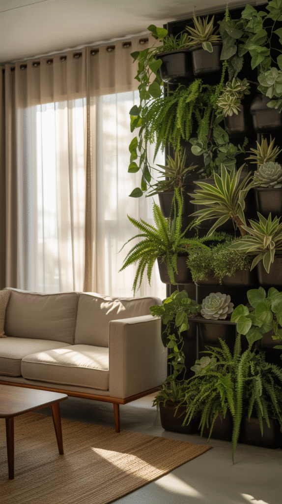
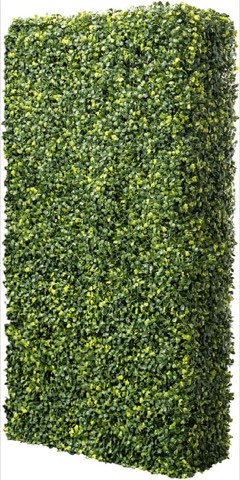
Artificial Boxwood Hedge Wall Panel, 18 x 36 Inch, Plant Privacy Screen
Shop on Amazon7. Sliding Panels
Sliding panels offer real flexibility, close them off for privacy, or push them aside to open the whole space back up in seconds.
This adaptability makes them especially well-suited to a room that needs to serve more than one function throughout the day.
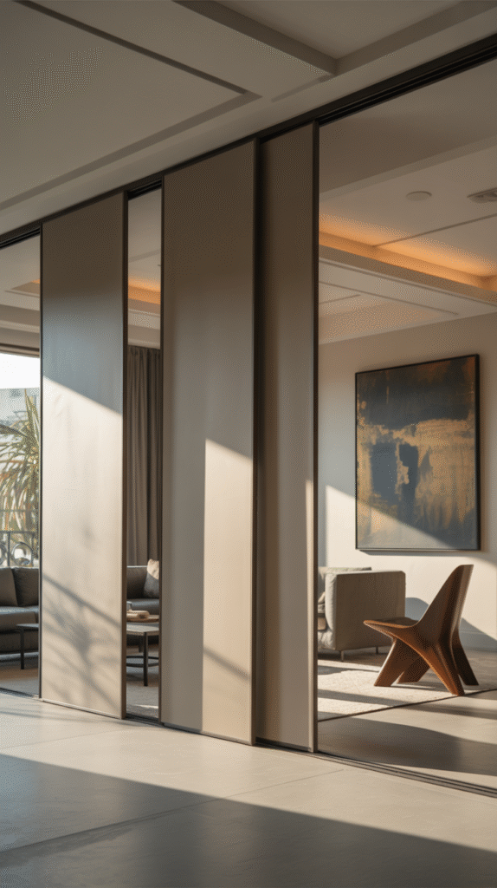
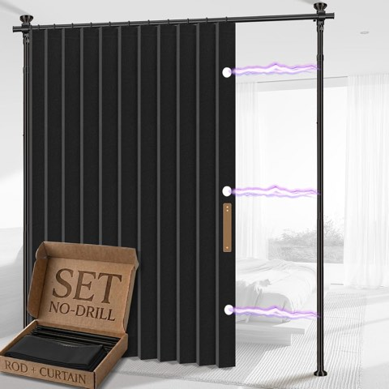
AJAZZ No-Drill Room Divider Curtain with Tension Rod, Black, 100 x 84 Inch
Shop on Amazon8. Open Shelving Units
A shelving unit used as a partition solves two problems at once, it divides the room and adds genuinely useful storage and display space.
This is one of the most practical options on this list, especially for a smaller home where every piece of furniture needs to earn its space.
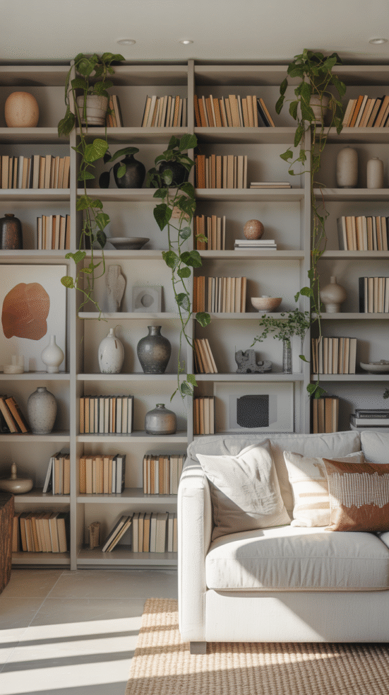
9. Glass and Metal Frames
A black metal frame paired with glass panels brings a genuinely industrial-chic edge while keeping the space feeling visually open.
This is one of the few partition styles that divides a room without sacrificing any natural light at all.
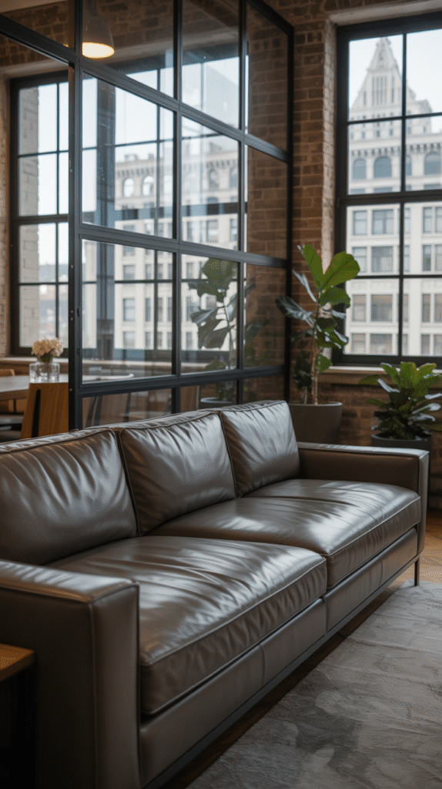
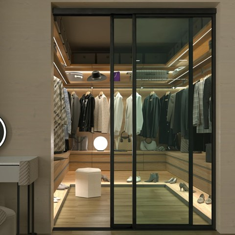
Glass Room Divider and Sliding Glass Closet Doors, Smoked Frosted Partition
Shop on Amazon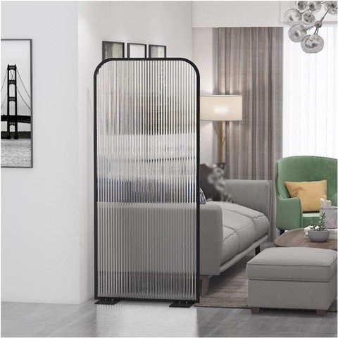
Modern Freestanding Translucent Reeded Glass Room Divider, Single Panel
Shop on Amazon10. Sleek Wooden Slats
Vertical wood slats break up a space while still letting light and sightlines pass through, which is exactly why they've become such a popular choice.
They also bring real warmth to a room in a way a solid wall or a purely metal divider never quite manages.
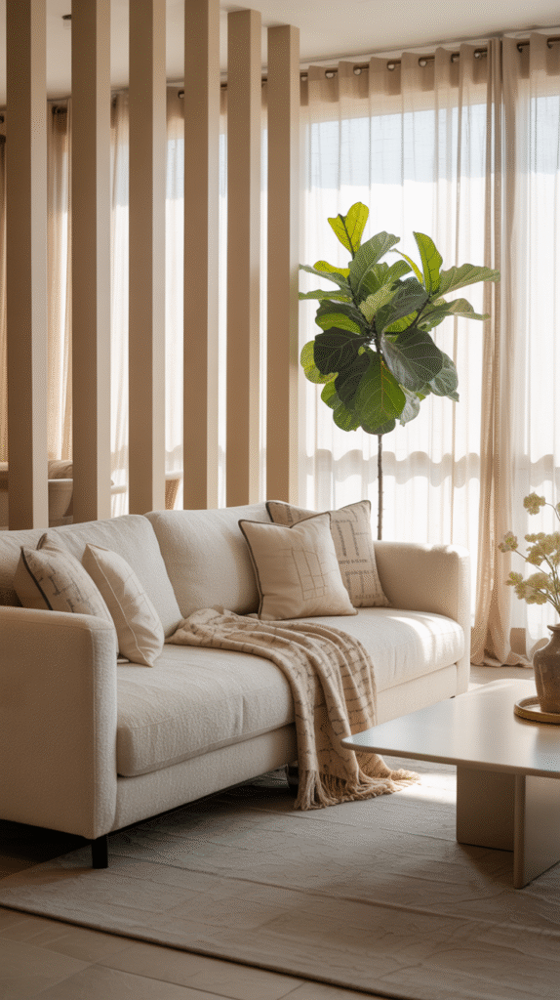
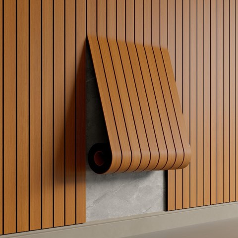
YU LI Peel and Stick PVC Slat Wall Panel, 236 x 15.75 Inch, Faux Walnut
Shop on AmazonChoosing the Right Partition for the Space
How permanent the change should be, how much light needs to keep moving through, and the room's existing style all weigh into the right choice here.
A rental or a frequently rearranged space calls for something reversible, like curtains or a folding screen, while a true renovation can support something as permanent as built-in cabinets.
Partitions Are the Secret Weapon of Good Design
None of these 10 options require giving up the openness that made an open floor plan appealing in the first place.
Pick the one that genuinely matches how much commitment the space actually calls for, and the room gets real definition without losing its flow.